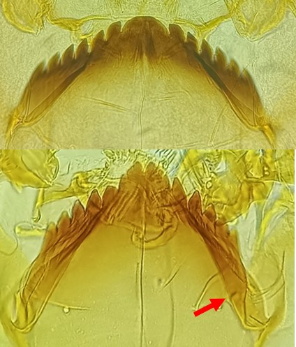
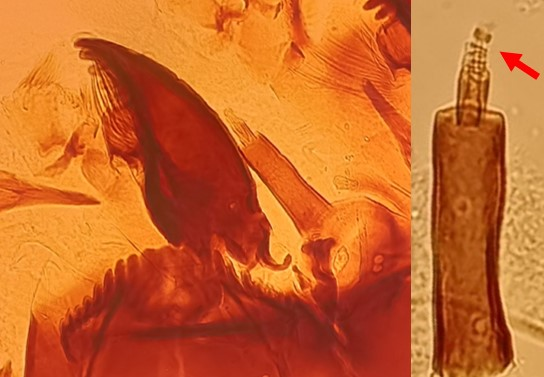
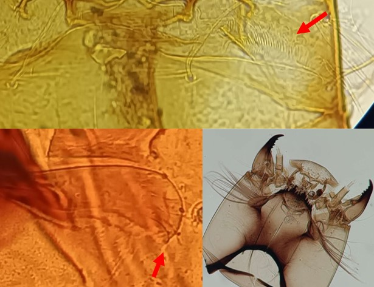

Clef d’identification des sous-familles et tribus
Plaques ventromentales non striées



Plaques ventromentales étroites avec au plus quelques soies
Mentum souvent fortement arqué (4-8 dents latérales). Généralement, prémandibules avec 2-3 dents (mais peut en avoir jusqu’à 6)
Segment 3 de l’antenne annelé
(Chez Protanypus, le segment 3 est peu visible, mais la larve est facilement reconnaissable par les nombreuses soies sur la capsule céphalique et les mandibules particulières (3c.)). Sous-famille rare dans les milieux lacustres : plutôt rhéophile mais peut être rencontré dans les lacs d’altitude (eau de fonte de glace)